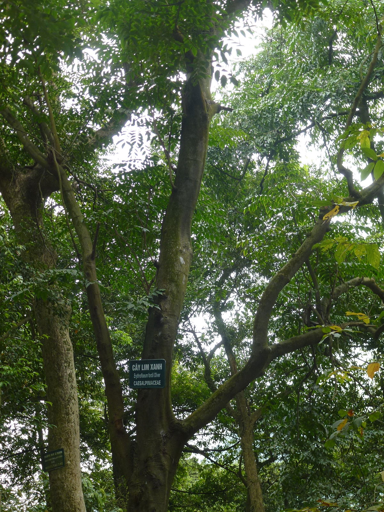
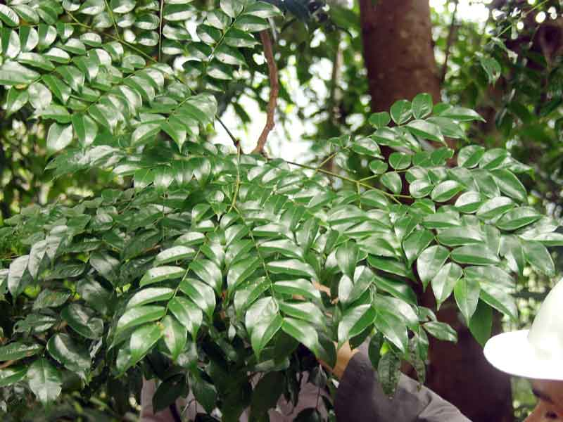

1. Đặc điểm hình thái
Là cây gỗ lớn, cao trên 30m. Thân thẳng, tròn, gốc có bạnh nhỏ, vỏ màu nâu có nhiều nốt sần màu nâu nhạt sau bong mảng hoặc vẩy lớn, lớp vỏ trong màu nâu đỏ. Nếu cây mọc lẻ thường phân cành thấp, cành non màu xanh lục. Lá kép lông chim 2 lần mọc cách, có 3-4 đôi cuống cấp 2. Hoa tự hình chùm kép. Hoa lưỡng tính gần đều. Quả đậu hình trái xoan thuôn. Hạt dẹt màu nâu đen, xếp lợp lên nhau, vỏ hạt cứng, dây rốn dày và to gần bằng hạt.


2. Phân bố
Lạng Sơn, Quảng Ninh, Thanh Hóa, Hà Tĩnh, Quảng Trị, Quảng Bình,.